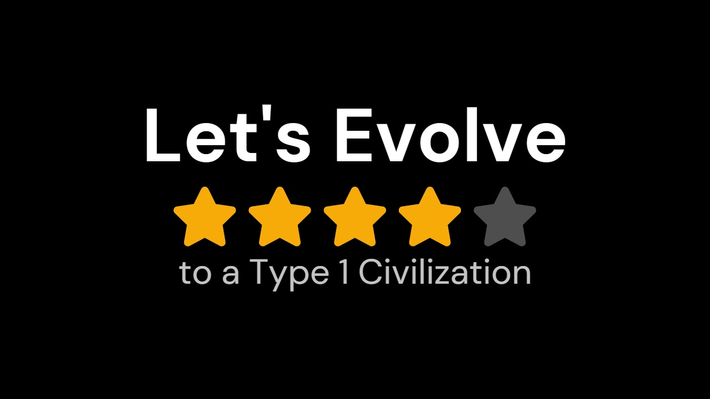
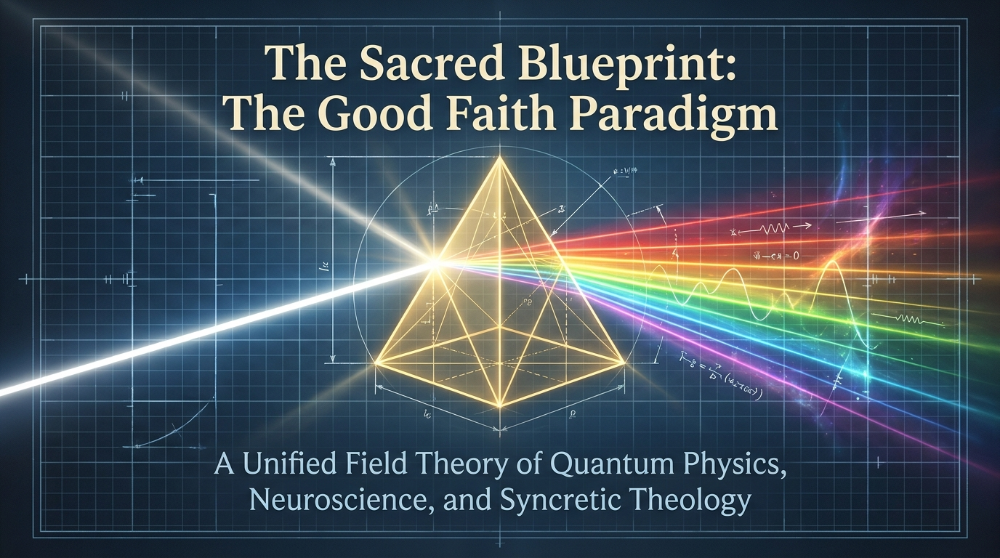

SLIDE 01 / 16
Video @ 00:00–00:10
I. Civilizational Teleology
Let's Evolve to a Type I Civilization
Good Faith Paradigm — NFT Harps of God Raffle & Golden Plates Presentation
GOOGLE TTS NARRATION
Slide 01 — Google Translate TTS Neural MP3
🎥 PRIMARY ARTIFACT / VIDEO FRAME

✨ GOOD FAITH PARADIGM ENHANCEMENT
